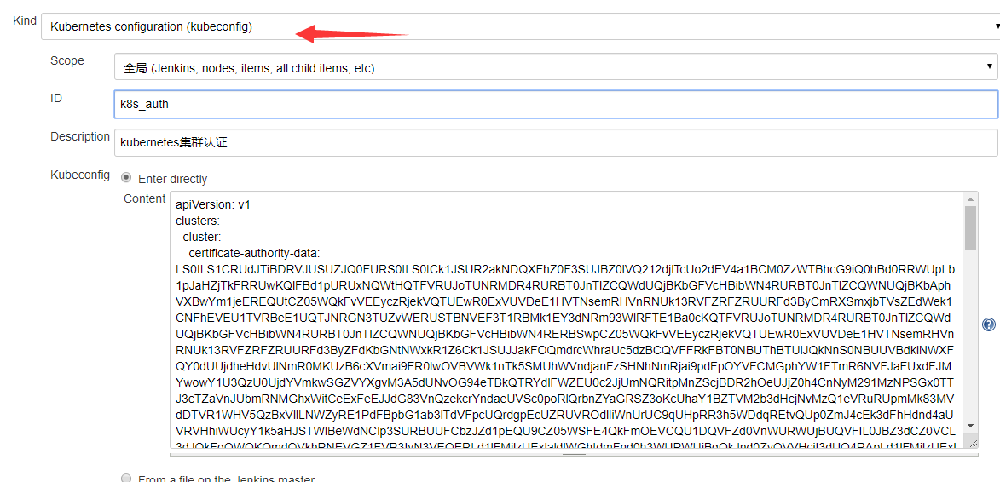
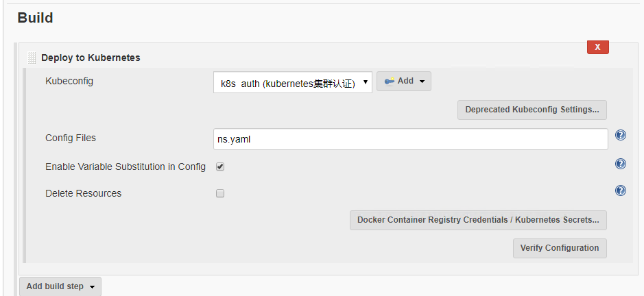
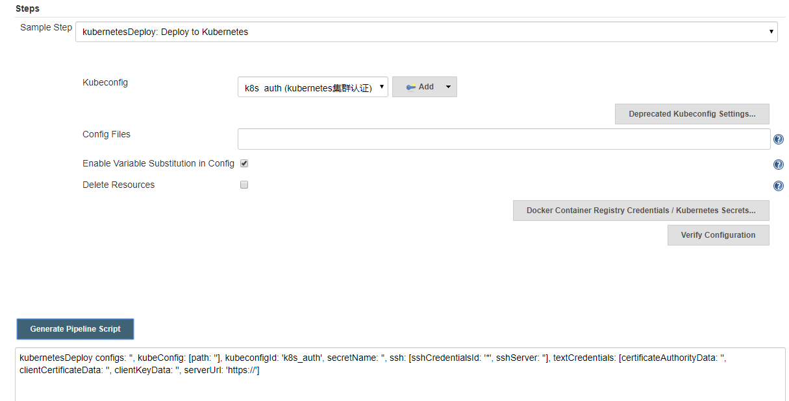
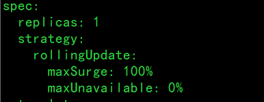
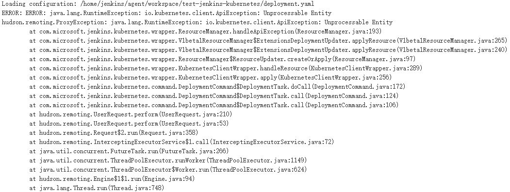
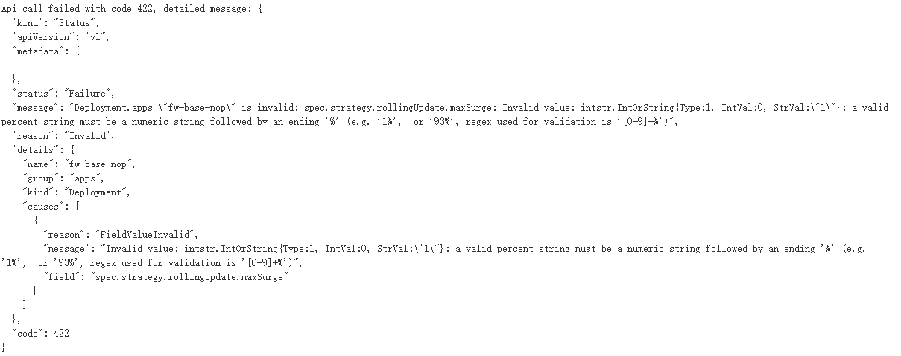
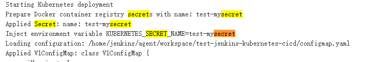
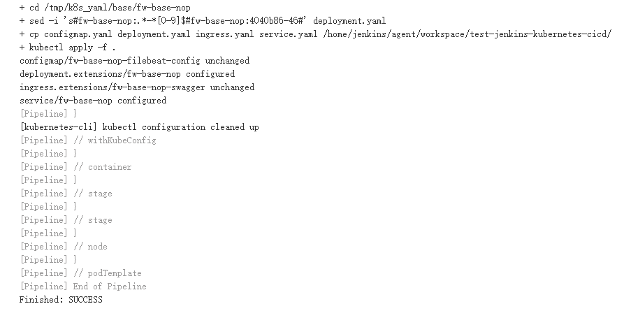

- 01.Jenkins的安装配置与日常维护.md.html
- 02.Jenkins强大的插件功能.md.html
- 03.Devops工具链.md.html
- 04.初探Jenkins CD实践.md.html
- 05.Jenkins常用项目配置参数.md.html
- 06.Jenkins部署之Docker要点.md.html
- 07.Jenkins集成之Ansible要点.md.html
- 08.Jenkins集成Ansible持续部署服务到Docker容器.md.html
- 09.实现自动化引擎之Jenkins Pipeline声明式语法.md.html
- 10.实现自动化引擎之Jenkins Pipeline脚本式语法.md.html
- 11.Pipeline语法进行持续交付与基础实践.md.html
- 12.Jenkins Docker Pipeline插件动态生成Slave节点语法剖析.md.html
- 13.使用 Docker Pipeline插件动态生成Jenkins Slave 实践.md.html
- 14.搞定不同环境下的Jenkins与Kubernetes集群连接配置.md.html
- 15.Jenkins Kubernetes Plugin介绍与语法详解.md.html
- 16.使用Kubernetes编排Jenkins Slave节点持续交付项目.md.html
- 17.使用Kubernetes插件持续部署服务到Kubernetes集群.md.html
- 18.Ansible Plugin插件语法详解与持续部署服务到kubernetes集群.md.html
- 捐赠
17.使用Kubernetes插件持续部署服务到Kubernetes集群
kubernetes系列插件的另一个用途就是将编译好的代码持续部署到kubernetes集群中，用到的插件主要为 ：
Kubernetes CLI。- Kubernetes Continuous Deploy（kubernetes cd）。
下面分别介绍一下这两款插件。
Kubernetes CLI
该插件的主要功能是执行流水线脚本时，通过在Jenkins系统中配置的连接kubernetes集群时创建的凭据，使用kubectl命令与kubernetes集群交互。
withKubeConfig() 是该插件的核心方法，包含的参数如下（前两个参数为必须）：
credentialsId：凭据id，还记得配置jenkins连接kubernetes时创建的凭据吗，就是这个凭据的id。
serverUrl：kubernetes集群的ApiServer的地址，也就是配置jenkins集成kubernetes时配置的kubernetes的地址。
caCertificate：用于验证API服务器的证书。如果未提供参数，则跳过验证，非必须。
clusterName：生成的集群配置的名称，默认为k8s。
namespace：默认的上下文所在的命名空间。
contextName：生成的上下文配置的名称，默认值为k8s。
了解了上面列出的参数，在来看一下withKubeConfig() 的语法，大致如下：
node {
stage('List pods') {
withKubeConfig([credentialsId: '<credential-id>',
caCertificate: '<ca-certificate>',
serverUrl: '<api-server-address>',
contextName: '<context-name>',
clusterName: '<cluster-name>',
namespace: '<namespace>'
]) {
sh 'kubectl get pods'
}
}
}
也可以在片段生成器中通过withKubeConfig：Setup Kubernetes CLI生成相应的语法片段，这里就不在演示了，有兴趣的可以自己试一下。
该方法除了必须项参数外，其他参数用的都比较少，所以这里就不再通过过多的篇幅去介绍如何使用，主要介绍一下两个必须参数的使用用例。
下面以一个示例来演示一下：
node {
stage('get nodes') {
withKubeConfig([credentialsId: 'afffefbf-9216-41dc-b803-7791cdb87134', serverUrl: 'https://192.168.176.156:6443']) {
sh 'kubectl get nodes'
}
}
}
说明：
需要说明的是：要使用该插件，首先要确保执行pipeline的agent上有kubectl二进制可执行文件，并具有执行权限。如果执行该pipeline时报如下错误：
java.io.IOException: error=2, No such file or directory
at java.lang.UNIXProcess.forkAndExec(Native Method)
......
Caused: java.io.IOException: Cannot run program "kubectl": error=2, No such file or directory
......
Finished: FAILURE
该错误表示没有kubectl命令或者有该命令但是从全局环境变量中没有找到该命令。
解决方法是修改/etc/profile文件的export PATH=参数，添加存放常用的可执行文件的路径，或者将kubectl二进制文件放到该参数指定的路径下，比如：
export PATH=/root/local/bin:/usr/bin:/usr/sbin:$PATH
表示kubectl放到这些路径下是可以被找到的，修改完该文件执行source /etc/profile命令使修改生效。
在jenkins中使用kubectl与kubernetes集群交互的实际工作场景并不多见，大多数场景是使用该命令根据定义的资源对象文件去部署代码。
使用kubectl容器
使用kubectl命令的另一种方式就是使用kubectl容器，可以根据一个小体积的镜像自定义一个可以与kubernetes集群交互的镜像，然后每次部署时就使用该镜像完成部署操作。比如下面的dockerfile。
FROM alpine
USER root
COPY kubectl /usr/bin/kubectl
RUN chmod +x /usr/bin/kubectl && mkdir -p /root/.kube/
COPY config /root/.kube/config
说明：
kubectl文件为与集群版本对应的二进制可执行文件。config文件为kubectl客户端命令与 kubernetes集群交互的配置认证文件，默认位置为/root/.kube/config。
根据这个dockerfile构建镜像。
docker build -t alpine-kubectl:1.14 -f dockerfile .
我的kubernetes集群版本为1.14，所以就打个1.14的tag。
镜像构建好以后可通过命令查看该镜像是否有效。
$ docker run -it --rm alpine-kubectl:1.14 kubectl get nodes
NAME STATUS ROLES AGE VERSION
192.168.176.151 Ready <none> 171d v1.14.1
192.168.176.152 Ready <none> 171d v1.14.1
......
看到命令成功执行，说明自定义镜像构建成功，接下来就可以使用此镜像操作kubernetes集群了。
如下示例：
podTemplate(cloud: 'kubernetes',namespace: 'default', label: 'TEST-CD',
containers: [
containerTemplate(
name: 'test-cd',
image: "192.168.176.155/library/alpine-kubectl:1.14",
ttyEnabled: true,
privileged: true,
alwaysPullImage: false)
],
){
node('TEST-CD'){
stage('test-cd'){
container('test-cd'){
sh 'kubectl get nodes'
}
}
}
}
该示例仅做参考，在实际工作中可以根据实际情况定义要如何实现持续部署到集群。
Kubernetes Continuous Deploy
简称kubernetes cd，该插件用于将kubernetes中的资源对象部署到kubernetes集群中。
它提供以下功能：
- 通过SSH从主节点获取cluster credentials ，也可以手动配置它。
- 资源配置的变量替换，使您可以进行动态资源部署。
- 提供登录私有Docker registry的登录凭证管理。
- 无需在Jenkins agent节点上安装
kubectl工具。
支持的kubernetes资源对象如下：
下面列出了支持的资源对象类型以及所支持的扩展组信息。
- ConfigMap (v1)
- Daemon Set (apps/v1、extensions/v1beta1、apps/v1beta2)
- Deployment (apps/v1、apps/v1beta1、extensions/v1beta1、apps/v1beta2)
- Ingress (extensions/v1beta1、 networking.k8s.io/v1beta1)
- Job (batch/v1)
- Namespace (v1)
- Pod (v1)
- Replica Set (apps/v1、extensions/v1beta1、apps/v1beta2)
- Replication Controller (v1) - 不支持滚动升级，如果需要，请使用 Deployment.
- Secret (v1) - 同样支持secret配置
- Service (v1)
- Stateful Set (apps/v1、apps/v1beta1、apps/v1beta2) apps/v1
- Cron Job (batch/v1beta1、batch/v2alpha1)
- Horizontal Pod Autoscaler(autoscaling/v1、autoscaling/v2beta1、autoscaling/v2beta2)
- Network Policy (networking.k8s.io/v1)
- Persistent Volume (v1)
- Persistent Volume Claim (v1)
- ClusterRole (rbac.authorization.k8s.io/v1)
- ClusterRoleBinding (rbac.authorization.k8s.io/v1)
- Role (rbac.authorization.k8s.io/v1)
- RoleBinding (rbac.authorization.k8s.io/v1)
- ServiceAccount (v1)
上面列出的资源对象，熟悉kubernetes的同学应该都知道是做什么用的。对于使用该插件持续部署应用代码来说，了解Deployment、service、configmap、ingress这些资源对象就足够了，几乎所有的持续部署使用的资源对象都是Deployment，而对于其他类型的资源对象，一般不会通过jenkins去间接操作。本系列文章不是kubernetes相关的课程，所以有关上面列出的资源对象的内容就不过多介绍。
要使用cd插件与kubernetes集群交互，就需要添加一个凭证，Jenkins使用该凭证可以通过kubectl命令对kubernetes集群有操作权限，与配置jenkins集成kubernetes时创建的凭证不同的是，该凭证的类型为Kubernetes configuration (kubeconfig)，是直接使用kubectl命令与kubernetes集群交互时使用的kubeconfig文件（默认路径/root/.kube/config），而不用根据文件内容去生成相应的认证证书。
在jenkins中创建使用kubeconfig文件凭证的方式也分多种：
- 直接输入kubeconfig内容。
- 在Jenkins master上设置kubeconfig的路径。
- 从远程SSH服务器获取kubeconfig文件。
下面以直接使用kubeconfig文件内容为例，演示如何创建该凭证。
点击”Credentials(凭据)-—-> system(系统)-—> Global Credentials(全局凭据)-—> Add Credentials(添加凭据)” ，如下图所示：

直接将kubeconfig文件的内容粘贴到Content框里，然后设置一个ID名称即可，在编写pipeline脚本时，使用创建的这个凭据的ID名称来对其引用。全部配置好保存即可。
创建好了凭据，就可以使用这个插件了。kubernetes cd插件既可以在普通类型的Jenkins Job中配置使用，也支持在pipeline脚本中使用。
在普通类型（比如自由风格类型、maven类型）的Job中，配置Job时使用”Add build step（添加构建步骤）”选项，从列出的选项列表中选择”Deploy to kubernetes“。
比如我在一个自由风格类型的job中配置在kubernetes集群中创建一个namespace，如下所示：

说明：
kubeconfig：这里应该选择上面创建的凭证即可。
Config Files：为定义的kubernetes资源对象文件，这里的路径默认为jenkins项目的${WORKSPACE}路径，如果有多个资源对象文件，要使用英文逗号”,“分开。需要注意的是，该文件的路径不支持绝对路径的写法，比如/root/ns.yaml，但是支持基于workspace的相对路径，比如job/ns.yaml（此时的文件路径为${WORKSPACE}/job/ns.yaml），更多该文件匹配的相关写法可参考这里
ns.yaml ：是一个namespace类型的资源对象文件，内容比较简单，如下：
apiVersion: v1
kind: Namespace
metadata:
name: test-deploy-plugin
执行结果这里就不贴图了，想看效果的可以自己去试一下。
在pipeline类型的job中使用cd插件，就要编写pipeline脚本了，开始之前还是要先了解一下该插件的语法 。
kubernetes-cd插件提供了kubernetesDeploy方法支持对pipeline脚本的编写。可以用kubernetesDeploy: Deploy to kubernetes片段生成器生成一个该方法的语法片段，如下所示：

美化一下语法。
kubernetesDeploy(kubeconfigId: 'k8s_auth', //必须项
configs: 'xx-deploy.yaml,xx-service.yaml,xx-ingress.yaml', // 必须项
enableConfigSubstitution: false,
secretNamespace: '<secret-namespace>',
secretName: '<secret-name>',
dockerCredentials: [
[credentialsId: '<credentials-id-for-docker-hub>'],
[credentialsId: 'auth_harbor', url: 'http://192.168.176.154'],
]
)
说明：
kubeconfigId：存储在Jenkins中的kubeconfig的凭据ID，必须。
configs：相关的资源对象文件，多个文件用逗号”,“隔开，必须。
enableConfigSubstitution：在配置中启用变量替换，非必须。
secretNamespace：对docker私有仓库认证的secret所在的命名空间，通常用于从私有仓库拉取镜像，非必须。
secretName：对docker私有仓库认证的secret名称，该secret的内容包含了私有仓库的地址信息以及登录私有仓库的用户名和密码。
使用资源对象deployment部署pod的时候通常要从Docker私有仓库拉取应用服务的镜像，对于需要认证的镜像仓库，拉取应用镜像时有两种认证方式：一种是部署pod的宿主机已经做了认证，此时不需要对现有资源对象文件进行额外定义就能直接拉取镜像；另一种是宿主机没有做认证，就需要在资源对象pod中定义imagepullsecret参数，这样拉取镜像时就会使用该secret指定的用户名和密码对仓库地址进行认证并拉取镜像，但是有一点需要注意，无论宿主机有没有做认证，都需要在宿主机上的docker配置文件中使用insecure-registries参数指定私有仓库的地址。
如果该参数存在，该名称将以KUBERNETES_SECRET_NAME作为环境变量名称显示，在资源对象deployment中引用时就可以写该变量名，如下所示代码：
apiVersion: extensions/v1beta1
kind: Deployment
metadata:
name: sample-k8s-deployment
spec:
replicas: 1
template:
metadata:
labels:
app: sample-k8s-app
spec:
containers:
- name: sample-k8s-app-container
image: <username or registry URL>/<image_name>:<tag(maybe $BUILD_NUMBER)>
ports:
- containerPort: 8080
imagePullSecrets:
- name: $KUBERNETES_SECRET_NAME
至于该secret如何创建，将在下面实践小节演示。
dockerCredentials：docker私有仓库认证的方法，通常用于从私有仓库拉取镜像，非必须。
有关使用kubernetes插件将代码持续部署到kubernetes集群的使用方法就介绍到这里，下面根据前面章节针对这两种插件进行一个简单实践。
持续部署示例
使用kubernetesDeploy插件
在上一节持续交付的基础下，添加新stage。
stage('deploy to k8s') {
sh """
cd /tmp/k8s_yaml/${project_name}/
sed -i 's#fw-base-nop:.*-*[0-9]\$#fw-base-nop:${imageTag}-${BUILD_NUMBER}#' deployment.yaml
cp * ${WORKSPACE}/
"""
kubernetesDeploy (
kubeconfigId:"k8s_auth",
configs: "*.yaml",
)
}
说明：
该流水线脚本使用shell命令修改deployment资源对象中image参数的值为新构建镜像的的镜像名称，然后将所有的资源对象拷贝到workspace目录下，然后执行流水线时会自动查找匹配的yaml文件。
上面是一个基础的示例，旨在演示一下流程。实际工作中，可以将这些资源对象文件放到源代码仓库指定的文件夹下，比如放到项目根路径下kubernetes-deploy目录里，上面pipeline脚本可以修改如下：
stage('deploy to k8s') {
sh """
sed -i 's#fw-base-nop:.*-*[0-9]\$#fw-base-nop:${imageTag}-${BUILD_NUMBER}#' kubernetes-deploy/deployment-${project_name}.yaml
cp * ${WORKSPACE}/
"""
kubernetesDeploy (
kubeconfigId:"k8s_auth",
configs: "kubernetes-deploy/*.yaml",
)
}
需要注意的是：
kubernetes-cd插件默认会自动解析kubernetes资源对象文件，如果遇到语法错误的设置会报错并退出。
configs: “*.yaml”：这里既可以指定单个文件，也可以指定多个文件，默认目录为job的workspace目录。
资源对象文件定义需要注意的是，deployment.yml 文件中，如果做了滚动更新的配置（目前只发现此处需要做改动），maxSurge和maxUnavailable需要写成百分比的形式。
strategy:
rollingUpdate:
maxSurge: 100%
maxUnavailable: 0%

如果写成int类型的数字，jenkins插件识别的过程中会报如下错误：


在前面的章节有提到过异常处理，在整个成熟的流水线脚本中，默认会出现错误的步骤一般发生在代码编译过程，所以还需要在此处加一个异常处理操作。对于脚本式语法依然使用try/catch/finally，如下所示：
try{
container('jnlp'){
stage('clone code'){
checkout([$class: 'GitSCM', branches: [[name: '*/master']], doGenerateSubmoduleConfigurations: false, userRemoteConfigs: [[credentialsId: 'c33d60bd-67c6-4182-b52c-d7aeebfab772', url: 'http://192.168.176.154/root/base-nop.git']]])
script {
imageTag = sh(returnStdout: true, script: 'git rev-parse --short HEAD').trim()
}
echo "${imageTag}"
}
stage('Build a Maven project') {
ecoho "${project_name}"
sh "cd ${project_name} && mvn clean install -DskipTests -Pproduct -U"
currentBuild.result = 'SUCCESS'
}
}
}catch(e){
currentBuild.result = 'FAILURE'
}
说明
try指令包含的内容可以是任何一个或者多个stage，无论包含哪个stage，catch指令都要紧跟try指令。
我这里演示的示例try指令包含的stage为拉取和编译代码的过程，可以将try指令放到任何你想要捕获异常的步骤，根据个人实际情况修改。
需要注意的是，catch能捕获的异常通常是命令执行失败或者插件的某个方法配置不当这种类型的错误，对于jenkins内部返回的异常（比如没有某个属性或者某个指令不适用于该流水线脚本）是不会捕获到的，此时如果先前做了job执行状态判断，即便job失败了，发送邮件操作也不会执行。
完整的代码示例如下：
def project_name = 'fw-base-nop' //项目名称
def registry_url = '192.168.176.155' //镜像仓库地址
podTemplate(cloud: 'kubernetes',namespace: 'default', label: 'pre-CICD',
serviceAccount: 'default', containers: [
containerTemplate(
name: 'jnlp',
image: "192.168.176.155/library/jenkins-slave:latest",
args: '${computer.jnlpmac} ${computer.name}',
ttyEnabled: true,
privileged: true,
alwaysPullImage: false,
),
containerTemplate(
name: 'sonar',
image: "192.168.176.155/library/jenkins-slave:sonar",
ttyEnabled: true,
privileged: true,
command: 'cat',
alwaysPullImage: false,
),
],
volumes: [
nfsVolume(mountPath: '/tmp', serverAddress: '192.168.177.43', serverPath: '/data/nfs', readOnly: false),
hostPathVolume(mountPath: '/var/run/docker.sock', hostPath: '/var/run/docker.sock'),
nfsVolume(mountPath: '/root/.m2', serverAddress: '192.168.177.43', serverPath: '/data/nfs/.m2', readOnly: false),
],
){
node('pre-CICD') {
stage('build') {
try{
container('jnlp'){
stage('clone code'){
checkout([$class: 'GitSCM', branches: [[name: '*/master']], doGenerateSubmoduleConfigurations: false, userRemoteConfigs: [[credentialsId: 'c33d60bd-67c6-4182-b52c-d7aeebfab772', url: 'http://192.168.176.154/root/base-nop.git']]])
script {
imageTag = sh(returnStdout: true, script: 'git rev-parse --short HEAD').trim()
}
echo "${imageTag}"
}
stage('Build a Maven project') {
sh "cd ${project_name} && mvna clean install -DskipTests -Pproduct -U"
currentBuild.result = 'SUCCESS'
}
}
}catch(e){
currentBuild.result = 'FAILURE'
}
if (currentBuild.result == null || currentBuild.result == 'SUCCESS') {
container('sonar'){
stage('sonar test'){
withSonarQubeEnv(credentialsId: 'sonarqube') {
sh "sonar-scanner -X "+
"-Dsonar.login=admin " +
"-Dsonar.language=java " +
"-Dsonar.projectKey=${JOB_NAME} " +
"-Dsonar.projectName=${JOB_NAME} " +
"-Dsonar.projectVersion=${BUILD_NUMBER} " +
"-Dsonar.sources=${WORKSPACE}/fw-base-nop " +
"-Dsonar.sourceEncoding=UTF-8 " +
"-Dsonar.java.binaries=${WORKSPACE}/fw-base-nop/target/classes " +
"-Dsonar.password=admin "
}
}
}
withDockerRegistry(credentialsId: 'auth_harbor', url: 'http://192.168.176.155') {
stage('build and push docker image') {
sh "cp /tmp/Dockerfile ${project_name}/target/"
def customImage = docker.build("${registry_url}/base/${project_name}-${imageTag}:${BUILD_NUMBER}","--build-arg jar_name=${project_name}.jar ${project_name}/target/")
echo "推送镜像"
customImage.push()
}
stage('delete image') {
echo "删除本地镜像"
sh "docker rmi -f ${registry_url}/base/${project_name}:${imageTag}-${BUILD_NUMBER}"
}
}
}else {
echo "---currentBuild.result is:${currentBuild.result}"
emailext (
subject: "'${env.JOB_NAME} [${env.BUILD_NUMBER}]' 构建异常",
body: """
详情：\n
failure: Job ${env.JOB_NAME} [${env.BUILD_NUMBER}] \n
状态：${env.JOB_NAME} jenkins 构建异常 \n
URL ：${env.BUILD_URL} \n
项目名称 ：${env.JOB_NAME} \n
项目构建id：${env.BUILD_NUMBER} \n
信息: 代码编译失败
""",
to: "[email protected]",
recipientProviders: [[$class: 'DevelopersRecipientProvider']]
)
}
stage('deploy'){
if (currentBuild.result == null || currentBuild.result == 'SUCCESS') {
sh """
cd /tmp/k8s_yaml/${project_group}/${project_name}
sed -i 's#fw-base-nop:.*-*[0-9]\$#fw-base-nop:${imageTag}-${BUILD_NUMBER}#' deployment.yaml
cp * ${WORKSPACE}/
"""
kubernetesDeploy (
kubeconfigId:"k8s_auth",
configs: "*.yaml",
)
}
}
}
}
}
imagePullSecrets
imagepullsecrets通过指定的secret名称，用于执行创建资源对象操作后，在拉取容器镜像时对docker私有仓库进行认证。
在kubernetes系列插件中，只有在kubernetes-plugin插件配置PodTemplate方法时有提到过imagepullsecrets，只不过此时的secret只是用于拉取提供pipeline脚本执行环境的容器镜像，不能用于在kubernetes集群部署应用容器，在拉取镜像时对私有仓库进行认证。
前面有提到过，拉取应用镜像时有两种认证方式：一种宿主机对私有仓库已经做了认证，此时直接部署即可；另一种是宿主机没有做认证，就需要在资源对象pod中定义imagepullsecret参数，这样拉取镜像时就会使用该secret指定的用户名和密码对仓库地址进行认证并拉取镜像。
那么这个secret是如何创建的呢？比较简单，使用一条命令即可。
kubectl create secret docker-registry <name> --docker-server=DOCKER_REGISTRY_SERVER --docker-username=DOCKER_USER --docker-password=DOCKER_PASSWORD --docker-email=DOCKER_EMAIL
其中：
DOCKER_REGISTRY_SERVER：docker私有仓库服务的地址。DOCKER_USER：向docker私有仓库认证的用户名。DOCKER_PASSWORD：向docker私有仓库认证的密码。- 默认如果没有加-n参数，该secret被创建在default命名空间，所以如果要将pod部署在指定的namespace里同时需要在该namespace里创建secret。
创建好secret后，编辑资源对象文件（通常为deployment.yaml），在template.spec下添加。
imagePullSecrets:
- name: <secret_name>
这样部署pod时会自动对私有仓库进行认证，而不在关心宿主机是否对私有仓库进行了认证。只不过这样就需要在每一个要部署应用容器的namespace中创建imagepullsecret。实际工作中虽然可以这样做，但是如果在项目组和namespace数量很大的的情况下，需要在每一个namespace中创建该secret，每次新建namepace都要创建一边该secret，显然不是很好的解决方案。好在kubedeploy提供了更简单的方式来实现此功能，就是使用kubernetesDeploy方法中的secret等参数，下面详细介绍一下。
kubernetesDeploy方法的dockerCredentials参数用于对docker私有仓库认证，如果secretName参数的值没有指定，则生成一个唯一的secret名称并以KUBERNETES_SECRET_NAME作为环境变量名被资源对象引用；如果设置了secretName，则更新这个secret；然后通过开启变量替换就可以被在secretNamespace指定的命名空间内创建的pod引用。
具体配置为：
kubernetesDeploy (
kubeconfigId:"k8s_auth",
configs: "*.yaml",
enableConfigSubstitution: true,
secretNamespace: 'base',
secretName: 'test-mysecret',
dockerCredentials: [
[credentialsId: 'auth_harbor', url: 'http://192.168.176.155'],
]
)
其中:
secretName最好不要与指定的namespace内存在的secret名称相同。
dockerCredentials 里credentialsId为创建的对私有仓库认证的凭据ID，url为私有仓库的url。
此时的资源对象文件imagepullsecret配置应该为：
imagePullSecrets:
- name: $KUBERNETES_SECRET_NAME
配置好后，kubernetesDeploy在解析资源对象文件的时候会自动对KUBERNETES_SECRET_NAME变量进行替换，将在kubernetesDeploy方法中设定的secretName参数定义的值替换该变量，并部署。这样，对于任何namespace下的容器部署都不需要在单独的配置镜像仓库的认证，只需要在配置kubernetesDeploy方法下secretNamespace参数的值即可，而无需在每一个namespace下都创建secret。
完整的stage如下。
stage('deploy'){
if (currentBuild.result == null || currentBuild.result == 'SUCCESS') {
sh """
cd /tmp/k8s_yaml/${project_group}/${project_name}
sed -i 's#fw-base-nop:.*-*[0-9]\$#fw-base-nop:${imageTag}-${BUILD_NUMBER}#' deployment.yaml
cp * ${WORKSPACE}/
"""
kubernetesDeploy (
kubeconfigId:"k8s_auth",
configs: "*.yaml",
enableConfigSubstitution: true,
secretNamespace: 'base',
secretName: 'test-mysecret',
dockerCredentials: [
[credentialsId: 'auth_harbor', url: 'http://192.168.176.155'],
]
)
}
}
执行时在jenkins console中可以看到该值进行了替换，如下所示：- 
使用kubernetes cli插件
该插件如何使用上面已经做了介绍，我这里的示例直接定义一个新的镜像配置（根据自己实际情况配置），使用前面创建的kubectl容器在持续部署步骤使用withKubeConfig方法用apply命令直接更新服务。
下面直接看一下pipeline脚本。
def project_name = 'fw-base-nop' //项目名称
def registry_url = '192.168.176.155' //镜像仓库地址
def project_group = 'base'
podTemplate(cloud: 'kubernetes',namespace: 'default', label: 'pre-CICD',
serviceAccount: 'default', containers: [
containerTemplate(
name: 'jnlp',
image: "192.168.176.155/library/jenkins-slave:sonar",
args: '${computer.jnlpmac} ${computer.name}',
ttyEnabled: true,
privileged: true,
alwaysPullImage: false,
),
containerTemplate(
name: 'kubectl',
image: "192.168.176.155/library/alpine-kubectl:1.14",
ttyEnabled: true,
privileged: true,
command: 'cat',
alwaysPullImage: false,
),
],
volumes: [
nfsVolume(mountPath: '/tmp', serverAddress: '192.168.177.43', serverPath: '/data/nfs', readOnly: false),
hostPathVolume(mountPath: '/var/run/docker.sock', hostPath: '/var/run/docker.sock'),
nfsVolume(mountPath: '/root/.m2', serverAddress: '192.168.177.43', serverPath: '/data/nfs/.m2', readOnly: false),
],
){
node('pre-CICD') {
stage('build') {
try{
container('jnlp'){
stage('clone code'){
checkout([$class: 'GitSCM', branches: [[name: '*/master']], doGenerateSubmoduleConfigurations: false, userRemoteConfigs: [[credentialsId: 'c33d60bd-67c6-4182-b52c-d7aeebfab772', url: 'http://192.168.176.154/root/base-nop.git']]])
script {
imageTag = sh(returnStdout: true, script: 'git rev-parse --short HEAD').trim()
}
echo "${imageTag}"
currentBuild.result == 'SUCCESS'
}
stage('Build a Maven project') {
sh "cd ${project_name} && mvn clean install -DskipTests -Pproduct -U"
currentBuild.result = 'SUCCESS'
}
}
}catch(e){
currentBuild.result = 'FAILURE'
}
if (currentBuild.result == null || currentBuild.result == 'SUCCESS') {
container('jnlp'){
stage('sonar test'){
withSonarQubeEnv(credentialsId: 'sonarqube') {
sh "sonar-scanner -X "+
"-Dsonar.login=admin " +
"-Dsonar.language=java " +
"-Dsonar.projectKey=${JOB_NAME} " +
"-Dsonar.projectName=${JOB_NAME} " +
"-Dsonar.projectVersion=${BUILD_NUMBER} " +
"-Dsonar.sources=${WORKSPACE}/fw-base-nop " +
"-Dsonar.sourceEncoding=UTF-8 " +
"-Dsonar.java.binaries=${WORKSPACE}/fw-base-nop/target/classes " +
"-Dsonar.password=admin "
}
}
}
withDockerRegistry(credentialsId: 'auth_harbor', url: 'http://192.168.176.155') {
stage('build and push docker image') {
sh "cp /tmp/Dockerfile ${project_name}/target/"
def customImage = docker.build("${registry_url}/library/${project_name}:${imageTag}-${BUILD_NUMBER}","--build-arg jar_name=${project_name}.jar ${project_name}/target/")
echo "推送镜像"
customImage.push()
}
stage('delete image') {
echo "删除本地镜像"
sh "docker rmi -f ${registry_url}/library/${project_name}:${imageTag}-${BUILD_NUMBER}"
}
}
}else {
echo "---currentBuild.result is:${currentBuild.result}"
emailext (
subject: "'${env.JOB_NAME} [${env.BUILD_NUMBER}]' 构建异常",
body: """
详情：<br>
failure: Job ${env.JOB_NAME} [${env.BUILD_NUMBER}] <br>
状态：${env.JOB_NAME} jenkins 构建异常 <br>
URL ：${env.BUILD_URL} <br>
项目名称 ：${env.JOB_NAME} <br>
项目构建id：${env.BUILD_NUMBER} <br>
信息: 代码编译失败
""",
to: "[email protected]",
recipientProviders: [[$class: 'DevelopersRecipientProvider']]
)
}
stage('deploy'){
if (currentBuild.result == null || currentBuild.result == 'SUCCESS') {
container('kubectl'){
withKubeConfig(credentialsId: 'afffefbf-9216-41dc-b803-7791cdb87134', serverUrl:'https://192.168.176.156:6443') {
sh """
cd /tmp/k8s_yaml/${project_group}/${project_name}
sed -i 's#fw-base-nop:.*-*[0-9]\$#${project_name}:${imageTag}-${BUILD_NUMBER}#' deployment.yaml
cp * ${WORKSPACE}/
kubectl apply -f .
"""
}
}
}
}
}
}
}
执行结果如下：

上面的脚本依然可以放到应用代码的源码库中，通过配置Pipeline Script from SCM的方式从代码仓库拉取Jenkinsfile并执行，如何配置在前面的章节有过介绍，就不在重复说明。根据实际情况选择部署方式即可。
在文章的最后给出一个deployment资源对象的定义做一个参考。
---
apiVersion: extensions/v1beta1
kind: Deployment
metadata:
name: fw-base-nop
namespace: base
spec:
replicas: 1
strategy:
rollingUpdate:
maxSurge: 100%
maxUnavailable: 0%
template:
metadata:
labels:
name: fw-base-nop
spec:
terminationGracePeriodSeconds: 60
#imagePullSecrets:
#- name: $KUBERNETES_SECRET_NAME
containers:
- name: fw-base-nop
image: 192.168.176.155/base/fw-base-nop:bc29b5e-37
livenessProbe:
httpGet:
path: /monitor/info
port: 18082
scheme: HTTP
initialDelaySeconds: 300
timeoutSeconds: 10
successThreshold: 1
failureThreshold: 5
readinessProbe:
httpGet:
path: /monitor/info
port: 18082
scheme: HTTP
initialDelaySeconds: 300
timeoutSeconds: 10
successThreshold: 1
failureThreshold: 5
env:
- name: TZ
value: "Asia/Shanghai"
- name: JAVA_OPTS
value: "-Xms1228m -Xmx1228m"
- name: _JAVA_OPTIONS
value: "-Xms1228m -Xmx1228m"
ports:
- containerPort: 8082
resources:
limits:
cpu: 1024m
memory: 2048Mi
requests:
cpu: 1024m
memory: 2048Mi
volumeMounts:
- name: fw-base-nop-logs
mountPath: /data/logs/fw-base-nop
- name: host-resolv
mountPath: /etc/resolv.conf
- name: tz-config
mountPath: /etc/localtime
volumes:
- name: host-resolv
hostPath:
path: /etc/resolv.conf
- name: tz-config
hostPath:
path: /etc/localtime
- name: fw-base-nop-logs
emptyDir: {}
有关使用kubernetes插件持续部署的内容到此结束，本节内容只是给大家提供了一个选择的方案。在实际工作中还需要做好调研在考虑要如何去实现持续部署操作。
© 2019 - 2023 Liangliang Lee. Powered by gin and hexo-theme-book.